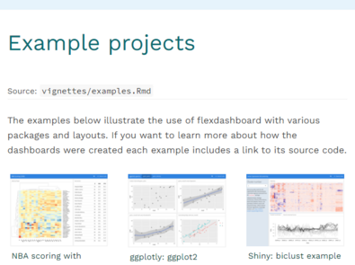

Gallery
Gallery
Check out the range of outputs and formats you can create using R Markdown.
Documents
With R Markdown, you write a single .Rmd file and then use it to render finished output in a variety of formats.


Interactive Documents
Combine R Markdown with htmlwidgets or the shiny package to make interactive documents.


Dashboards
Combine R Markdown with the flexdashboard package to quickly assemble R components into administrative dashboards. Each example below contains a link to the source code within the dashboard.
 Dashboard with gauges and value boxes
Dashboard with gauges and value boxes
Use flexdashboard to create dashboards with gauges and value boxes.


Presentations
R Markdown supports several presentation (slide show) formats.


Books
Use R Markdown alongside bookdown to author books and then distribute the books as PDF, HTML, EPUB documents and more. Here are some books that have been authored in R Markdown.
 Bookdown: Authoring Books with R Markdown
Bookdown: Authoring Books with R Markdown
The Bookdown book explains how to author books in R Markdown.


Websites
R Markdown makes it easy to build webpages straight from .Rmd files.


flexDashboard
flexdashboard extends R Markdown to make administrative dashbords. Its website is also built from R Markdown. Example Code.
 bookdown
bookdown
Bookdown extends R Markdown to make books. Its website is built with R Markdown and CSS styling. Example Code.
 profvis
profvis
profvis provides profiling tools for R code, as well as a website made with R Markdown. Example Code.
Templates
Create reusable templates to quickly apply styling and content to yan R Markdown document.
 JSS
JSS
The JSS article template in the rticles package formats an R Markdown document to meet the style guidelines of the Journal of Statistical Software. Example Code
 R Journal
R Journal
The rjournal article template in the rticles package formats an R Markdown document to meet the style guidelings of the R Journal. Example Code
 Skeleton
Skeleton
The skeleton template is one of several provided in Bob Rudis’ markdowntemplates package. Example Code

Package Vignettes
The html_vignette template makes it easy to write R package vignettes with R Markdown. These vignettes were each written with R Markdown.


 R Markdown with the Docco Linear Style (knitr)
R Markdown with the Docco Linear Style (knitr)
The Docco Linear example vignette in the knitr package. Example Code
 R Markdown with the Docco Classic Style (knitr)
R Markdown with the Docco Classic Style (knitr)
The Docco Classical example vignette in the knitr package. Example Code